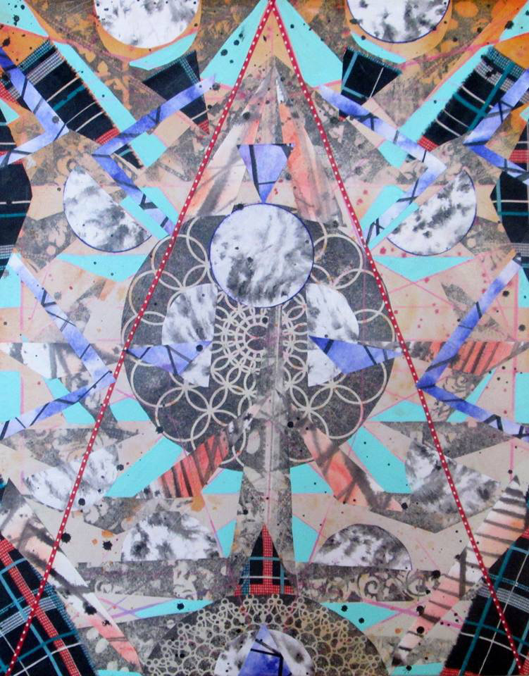

John Kowalczyk
John Kowalczyk was an artist before he even knew what an artist was. Although his art has certainly evolved since his Kindergarten art making days, he still seems to uphold that childlike curiosity and creativity for how things work together. Kowalczyk lets his art speak to him through the materials. His paintings are colorful amalgamations of fabric, thread, paint, and images. Something you would see in a kaleidoscope, whether it be on a canvas, or in the form of a larger than life horse sculpture.
His work appears to speak to a larger theme of ritual, with his process of layering, the mathematics behind it, and not only his architectural inspiration towards churches and theatres, but this idea of places where people come together and become one despite different backgrounds, sort of like the juxtaposition of the fabrics in his collage art, and the community he has crafted here in Milwaukee.
amfm: You were told by a kindergarten teacher that you should be an artist. Was that the end all be all for you and from there art history? When did you decide you wanted to be an artist versus someone who just made art?
john kowalczyk: It was “Troll Day” in kindergarten and everyone was supposed to bring a troll doll, ya know those ones with the neon hair and belly button gems. I forgot mine, but quickly drew one up, cut it out, and carried it around for the rest of “Troll Day.” That night my teacher called my mom and told her I should be an artist, I guess that was the beginning. I took painting lessons from a lady named Marlene Wood for years as a child. She taught out of her basement, and my sister and I walked there a couple times a week and would oil paint to our hearts’ content. The smell of oil paint and turpentine always brings me back to that basement. Mrs. Wood taught me so much about painting and the possibilities of being an artist. I began teaching painting lessons with her when I was in high school and decided art school was the only option. I was lucky enough to receive a scholarship to the Milwaukee Institute of Art and Design and pursued my BFA in Painting. Art has always been a constant in my life. I identify as an artist and I’m not sure how I would think about myself without that title. My art gives me a purpose and the ability to live my dream with passion on my own terms. It is a hard path to take and comes with a lot of hard work, but ultimately I can’t see myself being anything but an artist.
amfm: You talked about the "spirituality" behind your pieces in the sense that the separate pieces combine to make a whole. Can you elaborate more on the mysticism behind your art?
kowalczyk: I am always striving for more than the sum of my parts. All my work is collaged-based and I enjoy using vintage and recycled materials. I believe these tossed aside, upcycled materials become more than themselves when they are placed together in the context of a painting or piece of art. My work also references the architecture of sacred spaces throughout time and cultures. The symmetrical compositions suggest an abstracted formal or powerful space whether that is church, government building, or theater. I was raised Catholic, and the iconography and decorative aesthetic of the artwork has always stuck with me. I like to think of my paintings as a universal icon that can be understood by anyone no matter what their culture or beliefs. I think there is a common spirituality between humans that can be understood through my geometric abstractions.
amfm: You work is very geometrical and calculated and layered with many different elements, fabric, thread, some screen printing. What does the process of making a piece look like for you?
kowalczyk: My paintings usually start with some general outlines and a pile of fabrics, papers, prints, and ribbons I think work well together. I will sometimes look at a picture of a building or space and simplify it to a certain geometric framework. I will then begin to fill the sections of the drawing with paint or collaged materials. Once there is layer covering the entire canvas, I will begin to layer and interest the original drawing with contrasting stripes or shapes of more fabric or paint laid over top. This layer is more intuitive and I let the first layer dictate how the following layers interact with it. I like to set rules for myself, like keeping the composition symmetrical, sticking with the original stack of fabrics, and so on depending on the piece. I find giving myself a couple guidelines or rules allows me to fully explore the possibilities of the piece without being overwhelmed by endless variables, kind of like a science experiment. That being said, I do like to deviate and break one or two rules, whether that is adding a small asymmetrical element or sneaking a piece of fabric in somewhere that doesn’t exist elsewhere in the piece. Rules are made to be broken, this is my inner problem with authority surfacing.
amfm: What inspires you to create? What would you say is your biggest influence?
kowalczyk: I have an incessant need to create, I don’t feel good about myself unless I am creating on a regular basis. My work is conceptual but I don’t like to over think and complicate it. I create what I want to see, and think about it later. I don’t spend a lot of time sketching or planning. I like to just jump in and cover the canvas. My biggest influences are other artists who are following their dreams. Currently some of my favorite artists are Wangechi Mutu, Jules De Balincort, Tal R, and Fred Tomaselli, but the list is endless. I am always so inspired after spending a day gallery hopping or museum visiting, I need to get to the studio immediately to start creating work.
amfm: You also do work with sculpture, how and why did you get into sculpture and how does it feel to work on a larger scale and in a three-dimensional form?
kowalczyk: I call myself a painter, but like to say my paintings can take whatever form they need to. I am interested in creating larger than life installations and sculptures to let a viewer be completely immersed in my art. Some say less is more, although I have always felt more is more. With my large sculptural work, I am able to create a different relationship with the viewer where they can feel what it would be like to be inside one of the 2D paintings. I also like using of recycled materials to build something so large and flashy; I think this represents the separate elements becoming more than the sum of their parts very nicely, like when cardboard, scrap wood, and second hand fabric become a ten foot monumental horse.
amfm: How has Milwaukee influenced your art career and you personally as an artist? What do you think of the Milwaukee arts scene?
kowalczyk: I moved to Milwaukee eight years ago to attend MIAD and never thought I would still be here. I was certain I would be living in Brooklyn by now. I have grown to realize you don’t need to live in New York to be an artist, and financially it is very hard. One of the main reasons I love it here is that I have always had ample studio space and been able to support myself being an artist, whereas if I was in New York I would probably be serving tables 40 hours a week and too exhausted to come home and paint. In Milwaukee, I feel like a big fish in a small pond and the community has really responded to and supported my art. I have a large peer group of artists and more importantly mentors I look up to right in my backyard. I have access to world class museums and galleries, here and in Chicago, and I visit New York to keep up. I am able to live my life as an artist and feel the love of the community. What else could I ask for from Milwaukee? I think the Milwaukee art scene has been growing rapidly over the last few years. The number of galleries and art events in this city has doubled, if not tripled since I moved here. I believe there are endless opportunities for artists in this city right now, and that we are on the verge of an artistic revolution. Artists need to take the bull by the horns and create the opportunity they want for themselves.
|  |
For more from John Kowalczyk:
John Kowalczyk Art on Facebook
photo credits: john kowalczyk, (michael mabborang)